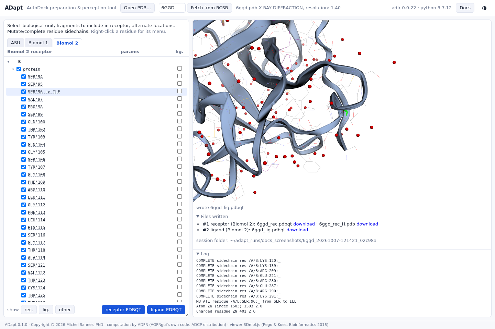

Writing the PDBQT files
What the two save buttons write, and how every choice is recorded.
The example below follows ADFR's own test of this entry. Starting from 6GGD, Biomol 2, the choices were:
- check
ZN'401(under manual charges) into the receptor; - check
EYB'402(under ligands) in the lig. column; - mutate
SER'96to ILE.
Then receptor PDBQT and ligand PDBQT were pressed.

The receptor
receptor PDBQT takes the receptor atoms of the current tab and runs ADFR's receptor preparation:
- selenomethionines become methionines;
- mutations are made and missing side chains built (best-scoring rotamer);
- the alternate locations not chosen are dropped;
- hydrogens are added with
reduce; - Gasteiger charges are assigned with Open Babel, and manual charges are set on the ions;
- AutoDock atom types are assigned, and non-polar hydrogens merged.
The file begins with REMARK 850 records of what was done; every record is explained in
Provenance in the PDBQT files. For the session above:
REMARK 850 AGFR version 1.2dev REMARK 850 AGFR source 6ggd.pdb REMARK 850 AGFR biomolecule Biomol 2: chains B REMARK 850 AGFR mutation B:SER:96:_ -> ILE REMARK 850 AGFR side chain completed A:LYS:120:_ … REMARK 850 AGFR side chain completed B:LYS:291:_ REMARK 850 AGFR altlocs B:LYS:101:_ @B (0.52) REMARK 850 AGFR altlocs B:SER:149:_ @C (0.42) … REMARK 850 AGFR altlocs B:CYS:277:_ @A (0.57) REMARK 850 AGFR protonated using reduce REMARK 850 AGFR partial charge assigned using OpenBabel Gasteiger model REMARK 850 AGFR end
The biomolecule line records the tab the receptor was written from and the chains of the
asymmetric unit it uses. For an assembly built by crystal symmetry it also gives the number of
copies, for instance REMARK 850 AGFR biomolecule Biomol 1: chains A B, 3 copies for
1H6W. ADapt adds this line, to the ligand files as well; the rest of each header is ADFR's.
The protonated receptor (PDB)
Next to the PDBQT, the same save writes <id>_rec_H.pdb: the receptor as
reduce protonated it, before ADFR merges the non-polar hydrogens and converts to
PDBQT. It holds every hydrogen, polar and non-polar, at the positions reduce chose,
and the same heavy atoms as the PDBQT. It is useful where a full-atom receptor is needed, and as
the record of reduce's choices for histidines, asparagines and glutamines. For
1A3R (tab ASU and Biomol 1):
REMARK 850 AGFR version 1.2dev REMARK 850 AGFR source 1a3r.pdb REMARK 850 AGFR biomolecule ASU and Biomol 1: chains H L P REMARK 850 AGFR protonated using reduce REMARK 850 AGFR partial charge assigned using OpenBabel Gasteiger model REMARK 850 AGFR end USER MOD reduce.3.23.130521 H: found=0, std=0, add=3340, rem=0, adj=160 … USER MOD Set 1.1: L 198 HIS : no HD1:sc= 0.771 K(o=1.6,f=-4.4) USER MOD Set 3.1: L 190 ASN :FLIP amide:sc= 0.105 F(o=-0.34,f=0.18) … ATOM 1 N ASP L 1 79.656 63.382 102.827 1.00 46.17 A N … ATOM 9 H1 ASP L 1 78.913 63.312 103.312 1.00 46.17 A H new
The file starts with the PDBQT's REMARK 850 header, up to
REMARK 850 AGFR end; everything after it is reduce's output, with the
atoms numbered in order (below).
Its USER MOD lines give, for each histidine, asparagine and glutamine whose
hydrogens or orientation reduce decided, the decision (no HD1: protonated
on NE2 only; FLIP: the amide or ring was flipped), a score, and a category:
K keep, F flip, C clash, X uncertain. The
same decisions are recorded in session.json (below).
reduce writes it, numbered by ADapt.
reduce gives every hydrogen it adds the atom serial number 0; ADapt
numbers all atoms 1, 2, … in file order, so each has its own number. That is the only change to
reduce's text. From the 100,000th atom on the number is hexadecimal
(186a0, …), as ProDy writes it. The added hydrogens keep the word new
after column 80; flipped atoms carry flip. Chain identifiers are those reduce saw: in an assembly built by
symmetry, the copies are renamed 0, 1, …, as in the PDBQT
(Known issues).The ligand
ligand PDBQT takes the ligand atoms of the current tab. Each connected fragment becomes one ligand, prepared by ADFR: hydrogens added and Gasteiger charges assigned with Open Babel (pH 7.4), non-polar hydrogens merged, and a torsion tree built with an automatic root.
REMARK 850 file prepared by AGFR version 1.2dev
REMARK 850 source .pdb
REMARK 850 AGFR biomolecule Biomol 2: chains B
REMARK 850 AGFR ligand from B:EYB:402:_
REMARK 4 active torsions:
REMARK status: ('A' for Active; 'I' for Inactive)
REMARK 0 A between atoms: C10_7 and C18_14
…
ROOT
HETATM 1 N1 EYB A 402 124.498 103.049 -42.674 1.00 0.00 -0.34 N
REMARK 850 AGFR ligand from B:EYB:402:_ line records where it came from.The files are named as AGFRgui names them: <id>_rec.pdbqt and
<id>_lig.pdbqt, or <id>_lig_001.pdbqt, … when there are
several fragments. ADapt adds <id>_rec_H.pdb to each receptor save. The
browser downloads the receptor PDBQT, or the ligand file (a zip when there are several);
Files written has a link for every file.
The session record
Every loaded file has a session folder (see Getting started). Its
session.json holds everything needed to trace a file back to what produced it:
- the input file, its size and md5, and where it came from (upload, or RCSB URL);
- the tool (
ADapt 0.1.0, its git commit), the Python version, the ADFR package (adfr-0.0.22) and the md5 of the ADFR source files that did the work; - every edit in order: tab switches, checkboxes, alternate locations, charges, side-chain choices, mutations;
- every save: its folder, the files and their md5, and the mutations, alternate locations and charges it was made with;
- for a receptor save,
reduce's version and decisions, and the chain renames made for it.
"events": [
{"what": "tab", "name": "Biomol 2", "at": "2026-09-29T14:30:44"},
{"what": "check", "key": "B:ZN:401:_", "column": "rec", "state": "checked", ...},
{"what": "check", "key": "B:EYB:402:_", "column": "lig", "state": "checked", ...},
{"what": "mutate", "key": "B:SER:96:_", "choice": "ILE", ...}
]
The reduce record of a receptor save, for the 1A3R receptor above:
"reduce": {
"version": "reduce.3.23.130521",
"chain_renames": {},
"decisions": [
{"residue": "L:HIS:198:_", "set": "Set 1.1", "decision": "no HD1", "score": 0.771,
"category": "K", "detail": "o=1.6,f=-4.4"},
{"residue": "L:ASN:190:_", "set": "Set 3.1", "decision": "FLIP amide", "score": 0.105,
"category": "F", "detail": "o=-0.34,f=0.18"},
...
]
}
decisions has one entry per histidine, asparagine and glutamine
USER MOD line of _rec_H.pdb, with the residue written
chain:name:number:insertion code as in the REMARKs. A residue
reduce did not adjust (a NoAdj-H line, as for a histidine bound to a
metal) is kept as {"raw": "<the line>"}. chain_renames maps each chain identifier
given to a symmetry copy back to its segment and original chain, for instance
"2": {"segment": "C", "chain": "A"} in 1H6W's Biomol 1; it is empty when nothing was
renamed.
Checking against ADFR's command line
For the choices ADFR's command line can express, the receptor ADapt writes is byte-identical to the command line's, apart from the biomolecule line. The command line has no ligand selection, so the check uses a variant of the session above that keeps both ZN and EYB in the receptor (step 2 with the first box instead of lig.). That receptor was checked to be byte-identical to:
python -m ADFR.bin.runAGFR -r 6ggd.pdb --toPdbqt --bioMol 2 \
--heteroToKeep "chid B resnum 402 401" --mutate "B:SER:96::ILE"
ADapt's test suite checks the same equivalence on ADFR's own test files. Run the command with the adcpsuite Python, with
ADS_ROOT set to that environment. Use python -m rather than the
agfr launcher, which splits option values that contain spaces.